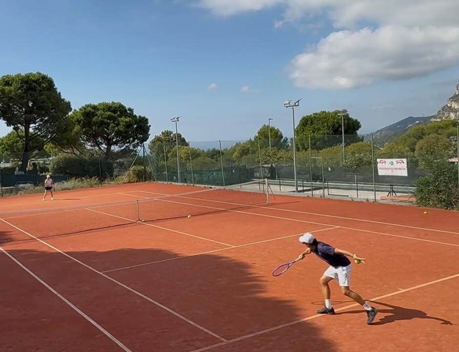

Vous cherchez un coach tennis privé à Nice qui se déplace directement chez vous ? Je me rends sur votre court — villa privée, résidence ou hôtel — pour des leçons d'une heure sur mesure. Je m'adapte entièrement à votre emploi du temps et viens directement chez vous.
Vous n'avez pas de court privé ? Écrivez-moi en indiquant où vous êtes : je vous proposerai une solution adaptée. Coach certifié FITP, 10 ans d'enseignement. Cours pour adultes, seniors et enfants, en français, anglais ou italien.
Pas de court privé dans votre secteur ? Contactez-moi — je propose des solutions adaptées à chaque situation à Nice et environs.
Je me déplace directement sur votre court privé à Nice — villa, résidence, hôtel. Aucun déplacement de votre côté.
Programme adapté à chaque âge et niveau — débutants complets, joueurs en progression ou pratique de loisir régulière.
Cours dispensés dans votre langue. Idéal pour les résidents internationaux et les touristes de passage à Nice.
Cours de tennis privé à Nice — à domicile
Nice est ma base principale sur la Côte d'Azur. Je propose des cours particuliers de tennis à Nice directement sur votre court privé — villa, résidence ou hôtel — dans tous les quartiers : Promenade des Anglais, Cimiez, Nice Est, Villefranche-sur-Mer, Beaulieu et Cap Ferrat. Disponible en français, anglais et italien.
Private Tennis Lessons in Nice for Residents, Expats and Tourists
Nice attracts residents, second-home owners and international visitors from all over the world. I regularly provide private tennis lessons for players staying in villas, residences and hotels across Nice and the surrounding French Riviera.
Whether you are looking for a single lesson during your holiday, weekly coaching throughout the year or intensive tennis training, sessions are adapted to your level and objectives. Lessons are available in French, English and Italian.
I regularly work with clients in Cimiez, Mont Boron, Fabron, Carré d'Or, Promenade des Anglais, Villefranche-sur-Mer, Beaulieu-sur-Mer and Saint-Jean-Cap-Ferrat. I also work regularly with families and expats based in Sophia Antipolis.
Tennis Lessons at Villas and Hotels in Nice
Private tennis lessons are available directly at your villa, private residence or hotel in Nice.
This service is particularly appreciated by families on holiday, business travellers and international visitors who wish to enjoy professional tennis coaching without leaving their accommodation.
Flexible scheduling is available seven days a week, depending on court availability.
Votre coach
Massimo Bettini — coach certifié FITP (IS1 et IS2), 10 ans d'enseignement, coordinateur de l'organisation de l'ATP Challenger de Vicence. Cours en français, anglais et italien.
Ce qu'en disent mes élèves
5,0 · 31 avis Google
“I had the pleasure of training with Massimo several times during my stay on the French Riviera, and I honestly couldn’t have asked for a better coach. […] Every lesson was thoughtfully structured, and he has an exceptional ability to identify the few adjustments that make the biggest difference. […]”
“I had 3 sessions with Massimo over the course of the week in Nice in preparation for a tennis tournament a week later. He was a fantastic coach, showing me several little tweaks that were easy to implement and immediately improved my game. […] 10 / 10. Highly recommend!!”
“Coach Massimo was fantastic to work with during our son’s lessons while we were visiting the French Riviera. He quickly understood our son’s game, communicated clearly, and struck a great balance between being positive, professional, and demanding in the right way. […] We would highly recommend Massimo to any visiting family looking for high-quality coaching and would gladly book with him again.”
“It was an absolute pleasure to do lessons with Massimo. He is incredibly professional and a fantastic coach. I would highly recommend him to anyone looking for a coach.”
Questions fréquentes
Réservation
Réserver à Nice
Écrivez-moi avec le lieu, vos disponibilités et le nombre de joueurs. Je vous réponds sous 24 heures.
← Découvrir tous les services sur la Côte d'Azur
Je propose également des cours privés de tennis à Antibes, Valbonne, Monaco, Cap Ferrat